The package offers a suite of align_* functions designed
to give you precise control over plot layout. These functions enable you
to reorder the observations or partition the observations into multiple
groups.
Currently, there are four key align_* functions
available for layout customization:
-
align_group: Group and align plots based on categorical factors. -
align_order: Reorder layout observations based on statistical weights or allows for manual reordering based on user-defined ordering index. -
align_kmeans: Group observations by k-means clustering results. -
align_dendro: Align plots according to hierarchical clustering or dendrograms.
set.seed(123)
small_mat <- matrix(rnorm(81), nrow = 9)
rownames(small_mat) <- paste0("row", seq_len(nrow(small_mat)))
colnames(small_mat) <- paste0("column", seq_len(ncol(small_mat)))
align_group
The align_group() function allows you to group
rows/columns into separate panels. It doesn’t add any plot area.
ggheatmap(small_mat) +
anno_top() +
align_group(sample(letters[1:4], ncol(small_mat), replace = TRUE))
#> → heatmap built with `geom_tile()`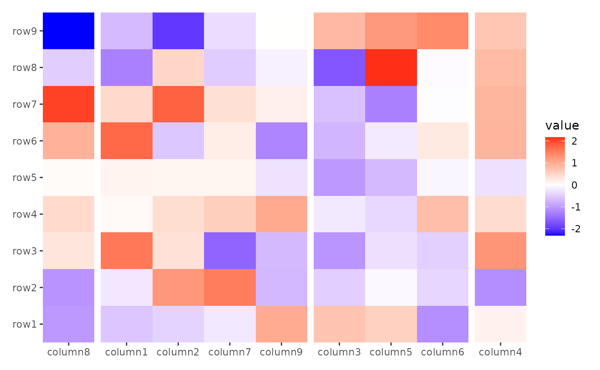
By default, the facet strip text is removed. You can override this
behavior with theme(strip.text = element_text()). Since
align_group() does not create a new plot, the panel title
can only be added to the heatmap plot.
ggheatmap(small_mat) +
theme(strip.text = element_text()) +
anno_left() +
align_group(sample(letters[1:4], nrow(small_mat), replace = TRUE))
#> → heatmap built with `geom_tile()`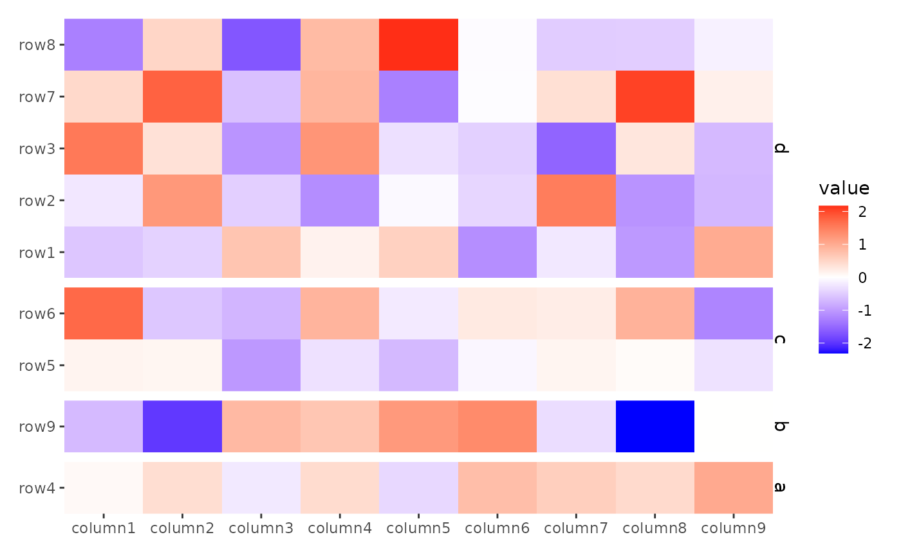
align_order
The align_order() function order the rows/columns based
on the summary weights, Like align_group(), it doesn’t add
a plot area.
Here, we order the rows based on the means.
ggheatmap(small_mat) +
anno_left() +
align_order(rowMeans)
#> → heatmap built with `geom_tile()`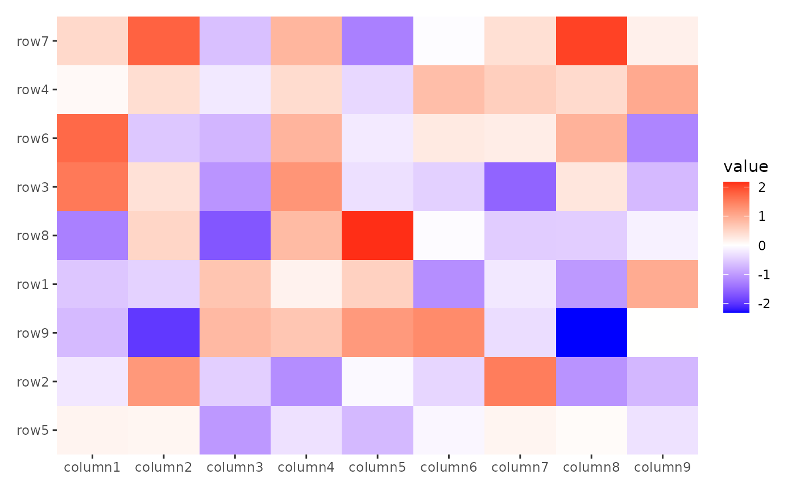
In addition, we can provide the ordering integer index directly in
the order argument.
my_order <- sample(nrow(small_mat))
print(rownames(small_mat)[my_order])
#> [1] "row3" "row1" "row7" "row6" "row2" "row8" "row9" "row5" "row4"
ggheatmap(small_mat) +
anno_left() +
align_order(my_order)
#> → heatmap built with `geom_tile()`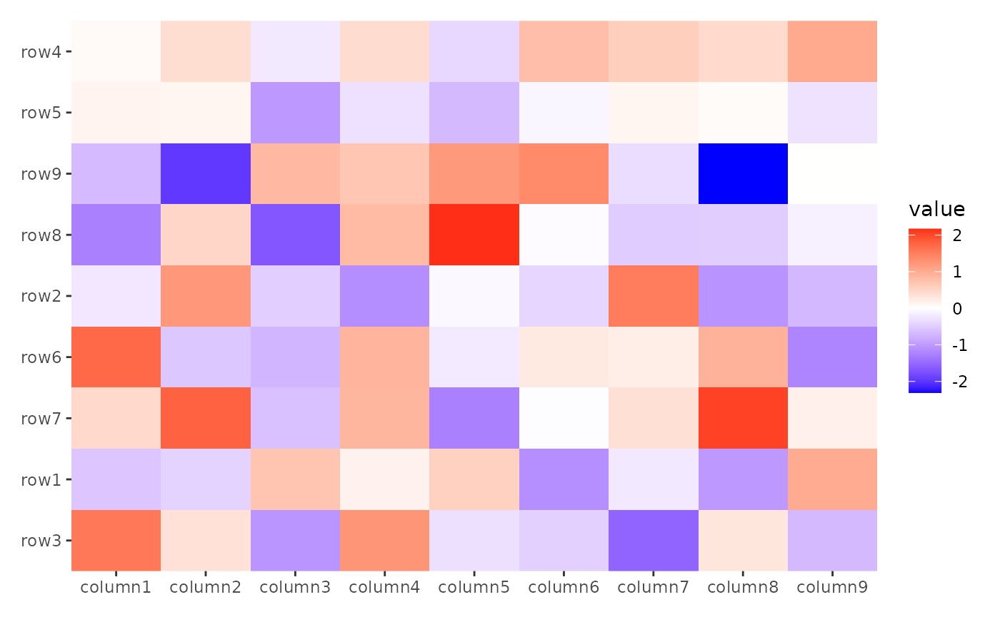
We can also provide the ordering character index.
ggheatmap(small_mat) +
anno_left() +
align_order(rownames(small_mat)[my_order])
#> → heatmap built with `geom_tile()`By default, align_order() reorders the rows or columns
in ascending order of the summary function’s output (from bottom to top
for rows, or from left to right for columns). To reverse this order, you
can set reverse = TRUE:
ggheatmap(small_mat) +
anno_left() +
align_order(rowMeans, reverse = TRUE)
#> → heatmap built with `geom_tile()`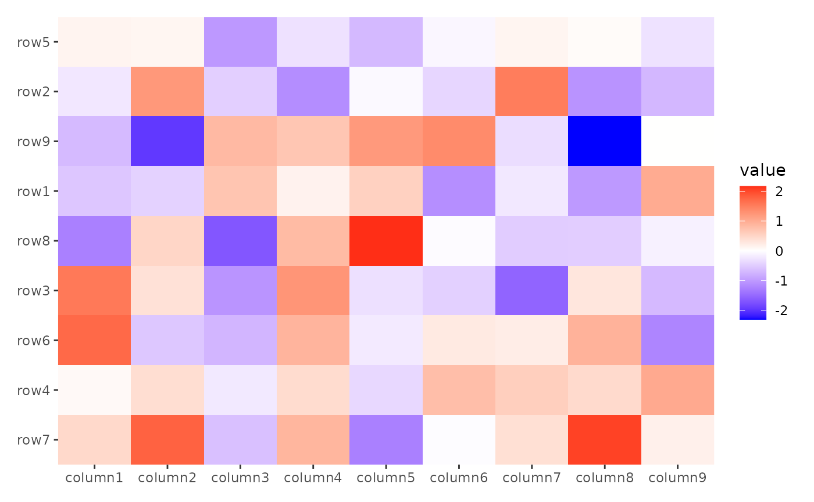
Some align_* functions accept a data
argument. This can be a matrix, a data frame, or even a simple vector.
The data argument can also accept a function (purrr-like
lambda syntax is supported), which will be applied to the layout data.
It is important to note that all align_* functions consider
the rows as the observations. It means the
NROW(data) must return the same number with the
observations in axis used for alignment.
quad_layout()/ggheatmap(): for column annotation, thelayoutdata will be transposed before using (If data is afunction, it will be applied with the transposed matrix). This is necessary because column annotation uses heatmap columns as observations, but we need rows.stack_layout()/ggstack(): thelayoutdata will be used as it is since we place all plots along a single axis.
Even for top and bottom annotations, you can use
rowMeans() to calculate the mean value across all
columns.
ggheatmap(small_mat) +
anno_top() +
align_order(rowMeans)
#> → heatmap built with `geom_tile()`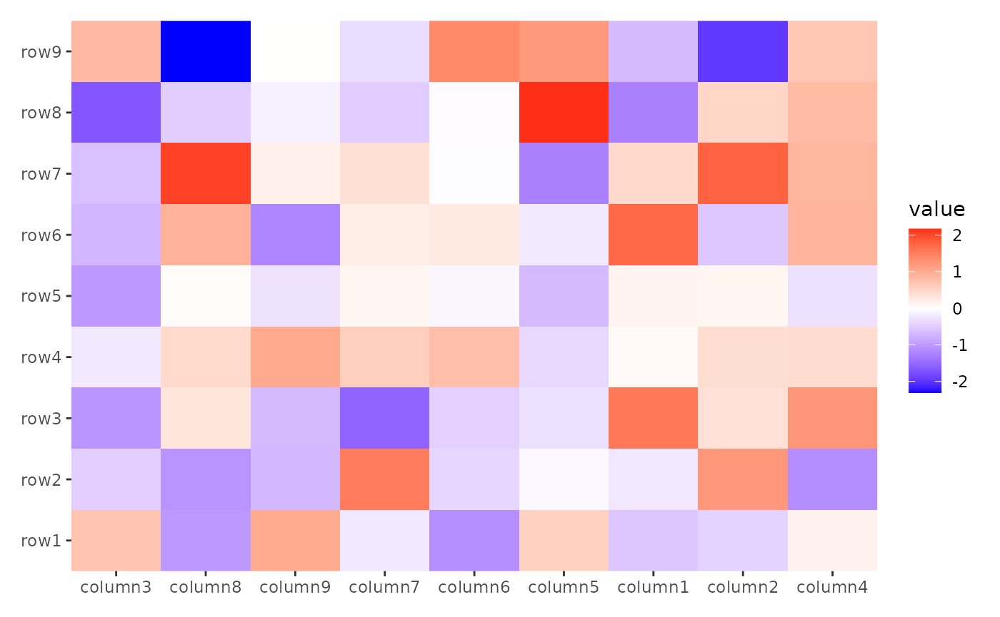
align_kmeans
The align_kmeans() function groups heatmap rows or
columns based on k-means clustering. Like the previous functions, it
does not add a plot area.
ggheatmap(small_mat) +
anno_top() +
align_kmeans(3L)
#> → heatmap built with `geom_tile()`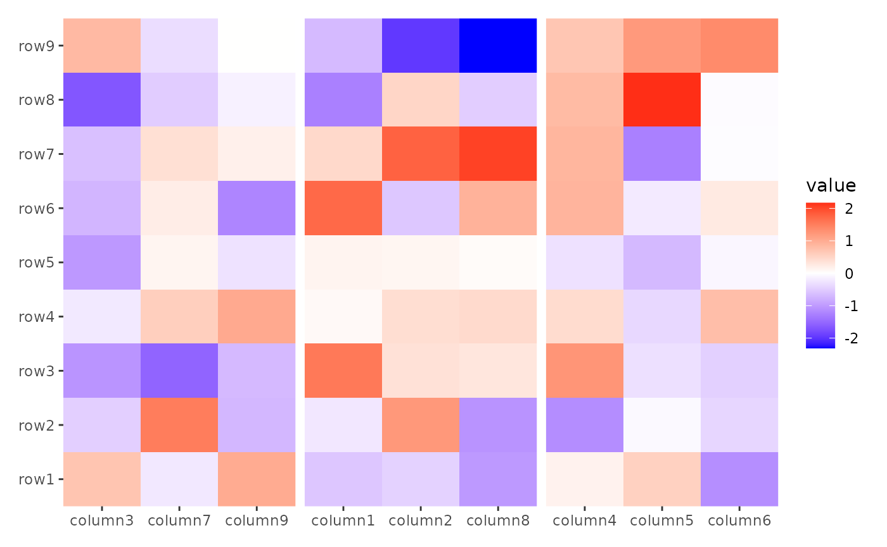
Note that all align_* functions which define groups must
not break the previous established groups. This means the new groups
must nest in the old groups, in this way, usually they cannot be used if
groups already exist.
ggheatmap(small_mat) +
anno_top() +
align_group(sample(letters[1:4], ncol(small_mat), replace = TRUE)) +
align_kmeans(3L)
#> Error in `align()`:
#> ! align_kmeans(3L) disrupt the previously established panel groups of
#> the top annotation `stack_align()`
ggheatmap(small_mat) +
anno_top() +
align_kmeans(3L) +
align_group(sample(letters[1:4], ncol(small_mat), replace = TRUE))
#> Error in `align()`:
#> ! align_group(sample(letters[1:4], ncol(small_mat), replace = TRUE))
#> disrupt the previously established panel groups of the top annotation
#> `stack_align()`align_dendro
The align_dendro() function adds a dendrogram to the
layout and can also reorder or split the layout based on hierarchical
clustering. This is particularly useful for working with heatmap
plots.
ggheatmap(small_mat) +
anno_top() +
align_dendro()
#> → heatmap built with `geom_tile()`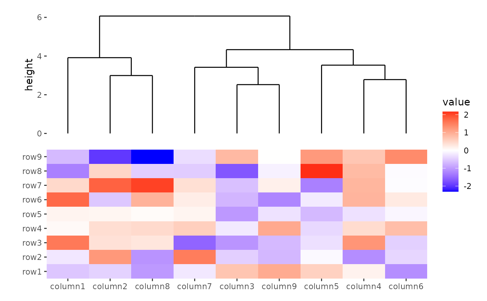
Hierarchical clustering is performed in two steps: calculate the
distance matrix and apply clustering. You can use the
distance and method argument to control the
dendrogram builind process.
There are two ways to specify distance metric for
clustering:
- specify
distanceas a pre-defined option. The valid values are the supported methods indist()function and coorelation coefficient"pearson","spearman"and"kendall". The correlation distance is defined as1 - cor(x, y, method = distance). - a self-defined function which calculates distance from a matrix. The function should only contain one argument. Please note for clustering on columns, the matrix will be transposed automatically.
ggheatmap(small_mat) +
anno_top() +
align_dendro(distance = "pearson") +
patch_titles(top = "pre-defined distance method (1 - pearson)")
#> → heatmap built with `geom_tile()`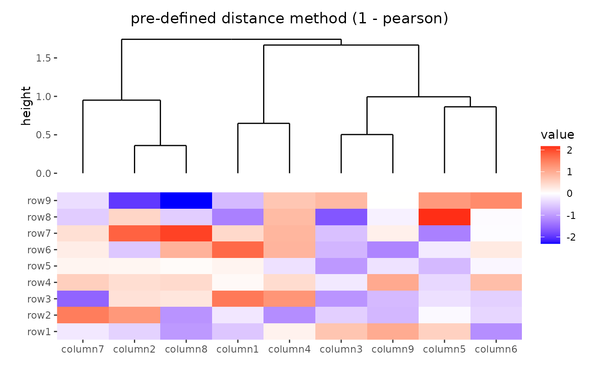
ggheatmap(small_mat) +
anno_top() +
align_dendro(distance = function(m) dist(m)) +
patch_titles(top = "a function that calculates distance matrix")
#> → heatmap built with `geom_tile()`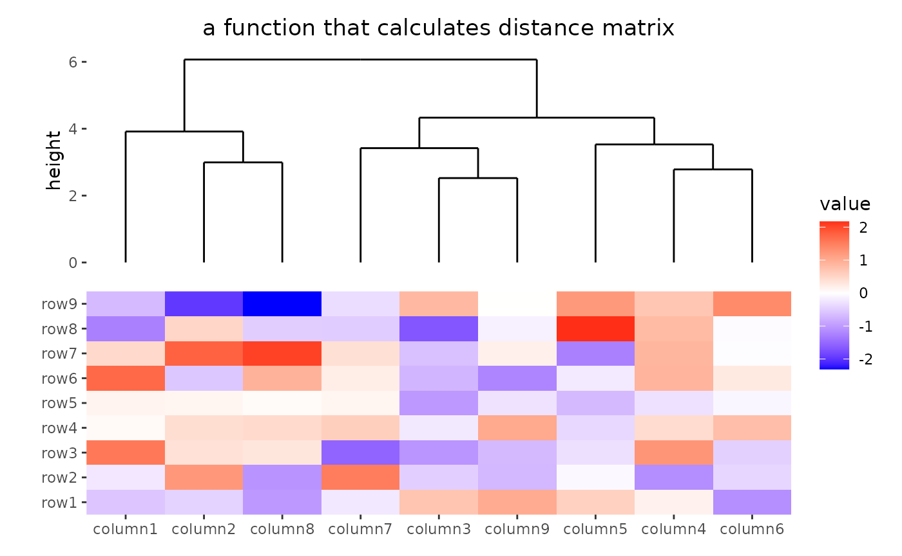
Method to perform hierarchical clustering can be specified by
method. Possible methods are those supported in
hclust() function. And you can also provide a self-defined
function, which accepts the distance object and return a
hclust object.
ggheatmap(small_mat) +
anno_top() +
align_dendro(method = "ward.D2")
#> → heatmap built with `geom_tile()`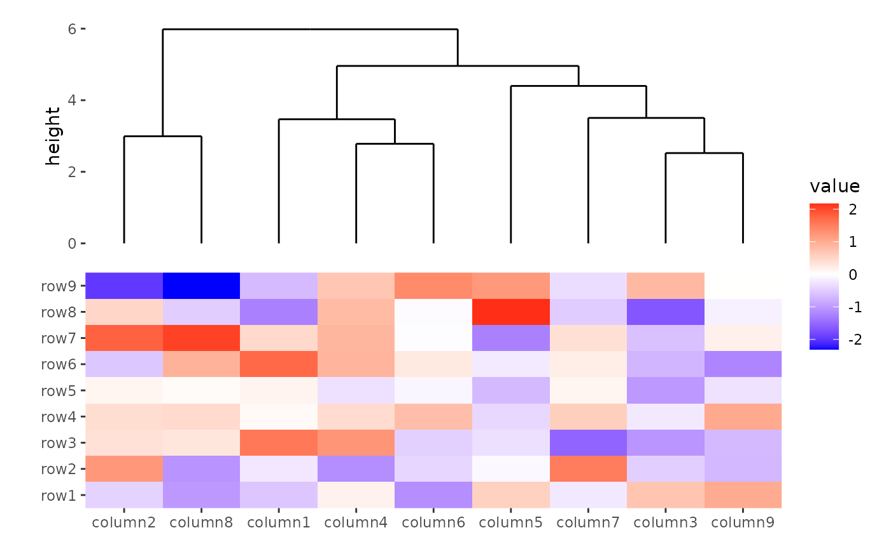
The dendrogram can also be used to cut the columns/rows into groups.
You can specify k or h, which work similarly
to cutree():
ggheatmap(small_mat) +
anno_top() +
align_dendro(k = 3L)
#> → heatmap built with `geom_tile()`In contrast to align_group(),
align_kmeans(), and align_order(),
align_dendro() is capable of drawing plot components. So it
has a default set_context value of TRUE,
meaning it will set the active context of the annotation stack layout.
In this way, we can add any ggplot elements to this plot area.
ggheatmap(small_mat) +
anno_top() +
align_dendro() +
geom_point(aes(y = y))
#> → heatmap built with `geom_tile()`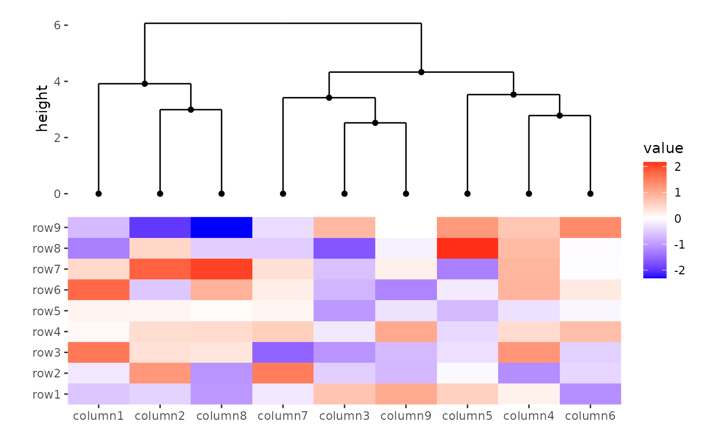
The align_dendro() function creates default
node data for the ggplot. See
ggplot2 specification in ?align_dendro for
details. Additionally, edge data is added to the
ggplote::geom_segment() layer directly, used to draw the
dendrogram tree. One useful variable in both node and
edge data is the branch column, corresponding
to the cutree result:
ggheatmap(small_mat) +
anno_top() +
align_dendro(aes(color = branch), k = 3) +
geom_point(aes(color = branch, y = y))
#> → heatmap built with `geom_tile()`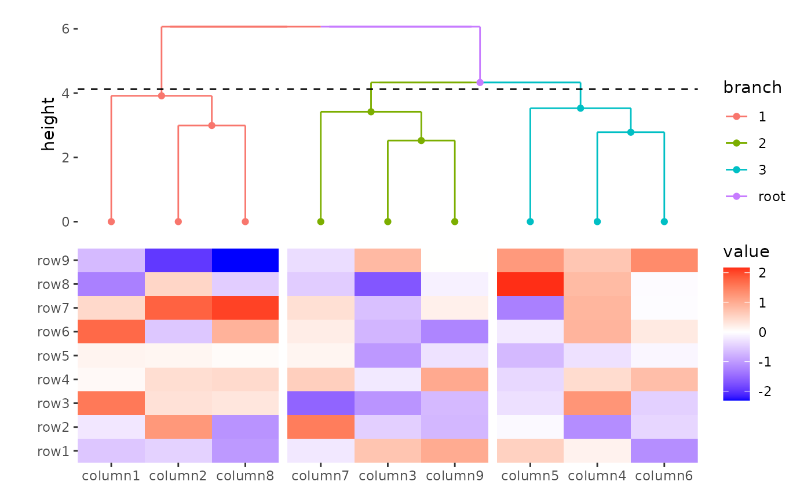
You can reorder the dendrogram based on the mean values of the
observations by setting reorder_dendrogram = TRUE.
h1 <- ggheatmap(small_mat) +
anno_top() +
align_dendro(aes(color = branch), k = 3, reorder_dendrogram = TRUE) +
ggtitle("reorder_dendrogram = TRUE")
h2 <- ggheatmap(small_mat) +
anno_top() +
align_dendro(aes(color = branch), k = 3) +
ggtitle("reorder_dendrogram = FALSE")
align_plots(h1, h2)
#> → heatmap built with `geom_tile()`
#> → heatmap built with `geom_tile()`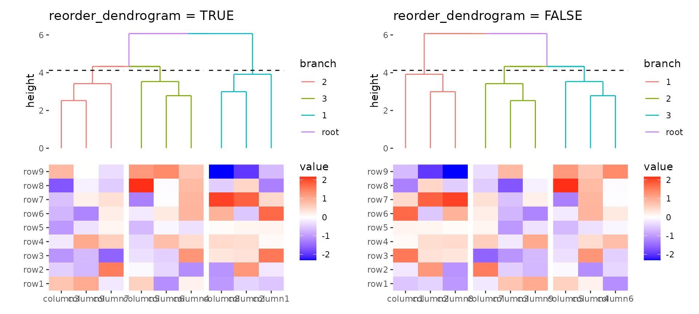
align_dendro() can also perform clustering between
groups, meaning it can be used even if there are existing groups present
in the layout, in this way, you cannot specify k or
h:
set.seed(3L)
column_groups <- sample(letters[1:3], ncol(small_mat), replace = TRUE)
ggheatmap(small_mat) +
anno_top() +
align_group(column_groups) +
align_dendro(aes(color = branch))
#> → heatmap built with `geom_tile()`
You can reorder the groups by setting
reorder_group = TRUE.
ggheatmap(small_mat) +
anno_top() +
align_group(column_groups) +
align_dendro(aes(color = branch), reorder_group = TRUE)
#> → heatmap built with `geom_tile()`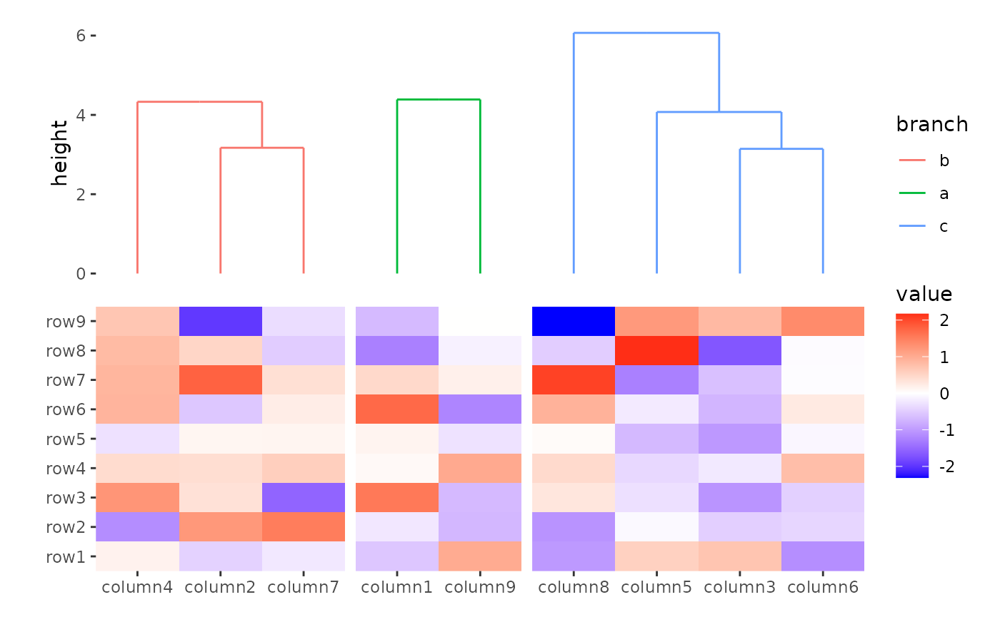
You can merge the sub-tree in each group by settting
merge_dendrogram = TRUE.
ggheatmap(small_mat) +
anno_top() +
align_group(column_groups) +
align_dendro(aes(color = branch), merge_dendrogram = TRUE)
#> → heatmap built with `geom_tile()`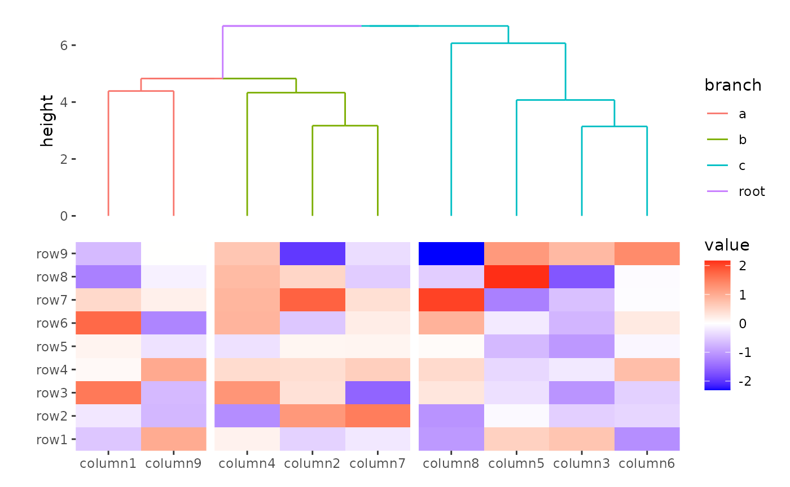
You can reorder the dendrogram and merge simutaneously.
ggheatmap(small_mat) +
anno_top() +
align_group(column_groups) +
align_dendro(aes(color = branch),
reorder_group = TRUE,
merge_dendrogram = TRUE
) +
anno_bottom() +
align_dendro(aes(color = branch),
reorder_group = FALSE,
merge_dendrogram = TRUE
)
#> → heatmap built with `geom_tile()`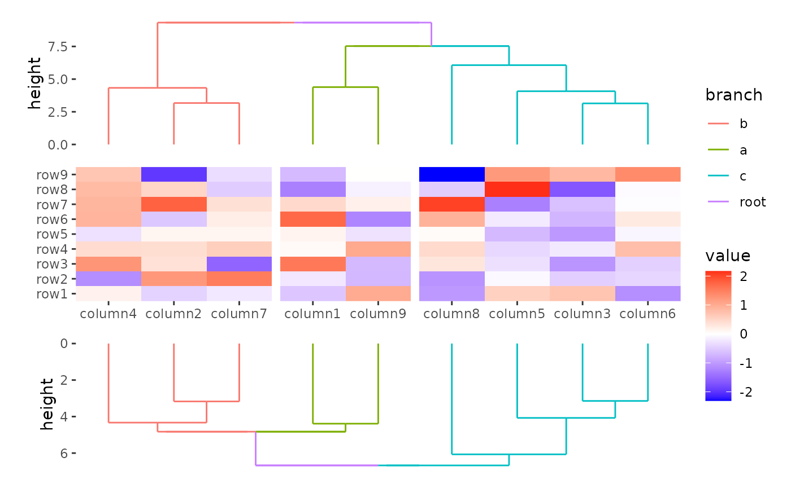
If you specify k or h, this will always
turn off sub-clustering. The same principle applies to
align_dendro(), where new groups must be nested within the
previously established groups.
ggheatmap(small_mat) +
anno_top() +
align_group(column_groups) +
align_dendro(k = 2L)
#> Error in `align()`:
#> ! align_dendro(k = 2L) disrupt the previously established panel groups
#> of the top annotation `stack_align()`Session information
sessionInfo()
#> R version 4.4.2 (2024-10-31)
#> Platform: x86_64-pc-linux-gnu
#> Running under: Ubuntu 22.04.5 LTS
#>
#> Matrix products: default
#> BLAS: /usr/lib/x86_64-linux-gnu/openblas-pthread/libblas.so.3
#> LAPACK: /usr/lib/x86_64-linux-gnu/openblas-pthread/libopenblasp-r0.3.20.so; LAPACK version 3.10.0
#>
#> locale:
#> [1] LC_CTYPE=C.UTF-8 LC_NUMERIC=C LC_TIME=C.UTF-8
#> [4] LC_COLLATE=C.UTF-8 LC_MONETARY=C.UTF-8 LC_MESSAGES=C.UTF-8
#> [7] LC_PAPER=C.UTF-8 LC_NAME=C LC_ADDRESS=C
#> [10] LC_TELEPHONE=C LC_MEASUREMENT=C.UTF-8 LC_IDENTIFICATION=C
#>
#> time zone: UTC
#> tzcode source: system (glibc)
#>
#> attached base packages:
#> [1] stats graphics grDevices utils datasets methods base
#>
#> other attached packages:
#> [1] ggalign_0.0.5.9000 ggplot2_3.5.1
#>
#> loaded via a namespace (and not attached):
#> [1] vctrs_0.6.5 cli_3.6.3 knitr_1.49 rlang_1.1.4
#> [5] xfun_0.49 generics_0.1.3 textshaping_0.4.0 jsonlite_1.8.9
#> [9] labeling_0.4.3 glue_1.8.0 colorspace_2.1-1 htmltools_0.5.8.1
#> [13] ragg_1.3.3 sass_0.4.9 fansi_1.0.6 scales_1.3.0
#> [17] rmarkdown_2.29 grid_4.4.2 tibble_3.2.1 evaluate_1.0.1
#> [21] munsell_0.5.1 jquerylib_0.1.4 fastmap_1.2.0 yaml_2.3.10
#> [25] lifecycle_1.0.4 compiler_4.4.2 dplyr_1.1.4 fs_1.6.5
#> [29] pkgconfig_2.0.3 farver_2.1.2 systemfonts_1.1.0 digest_0.6.37
#> [33] R6_2.5.1 tidyselect_1.2.1 utf8_1.2.4 pillar_1.9.0
#> [37] magrittr_2.0.3 bslib_0.8.0 withr_3.0.2 tools_4.4.2
#> [41] gtable_0.3.6 pkgdown_2.1.1 cachem_1.1.0 desc_1.4.3